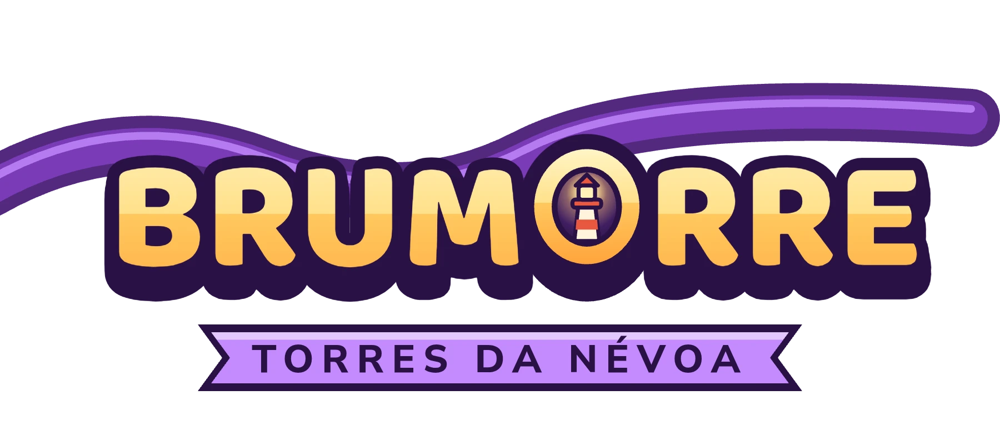
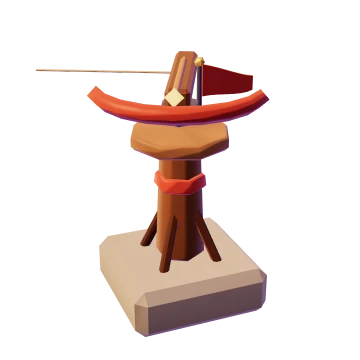
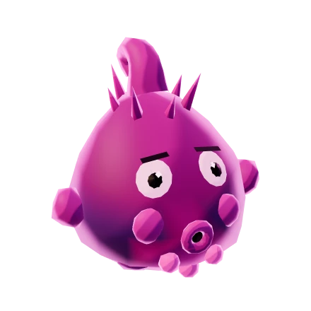
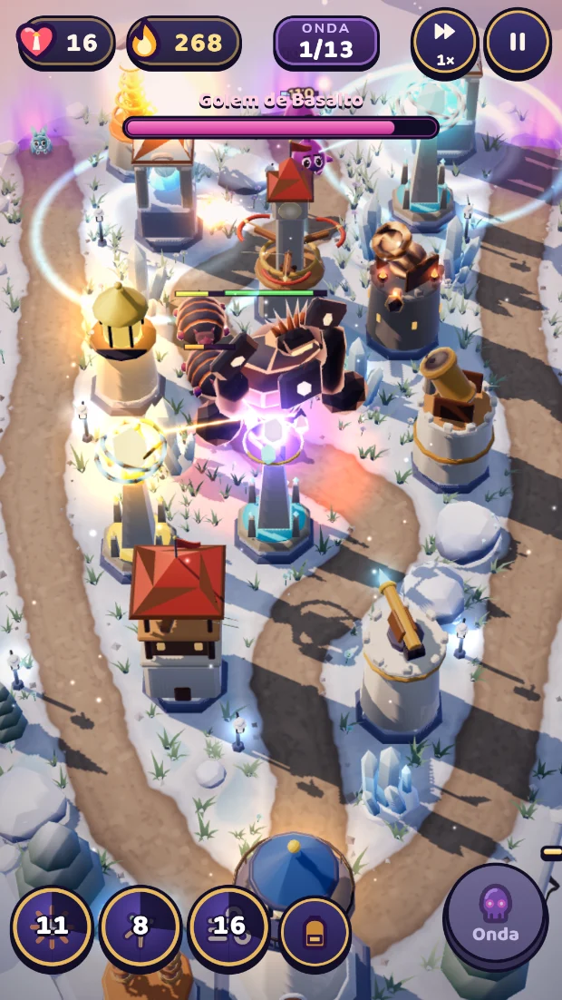
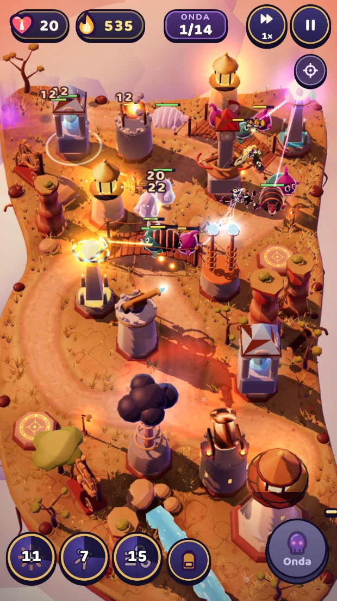
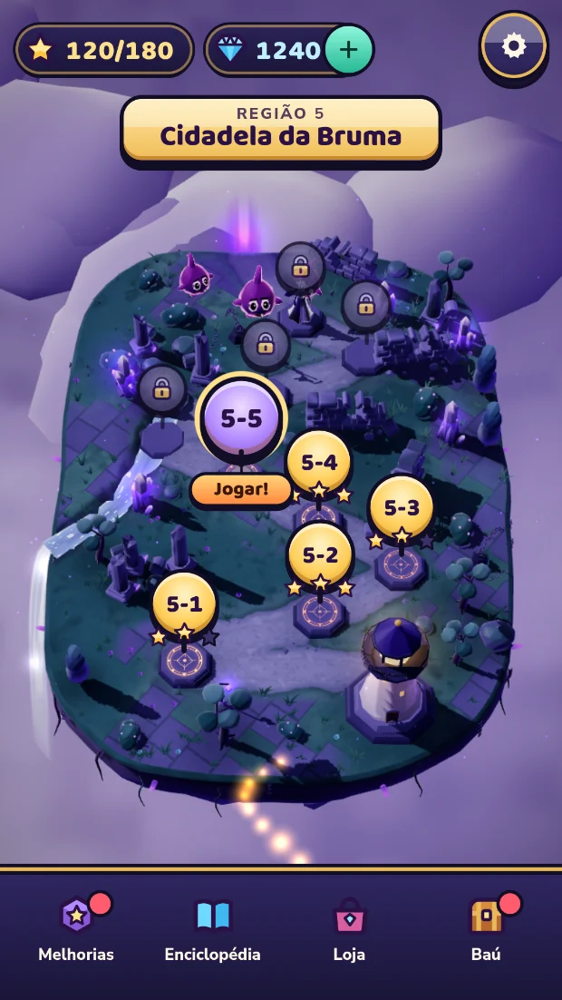
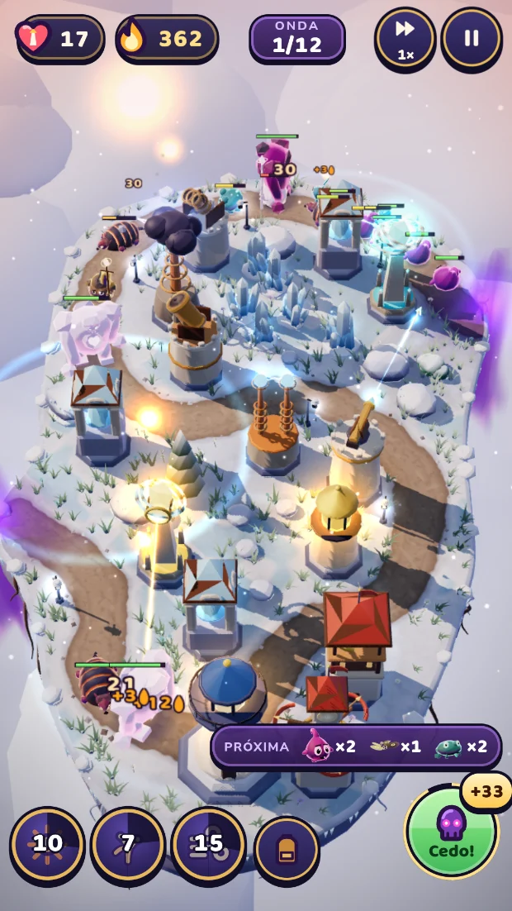
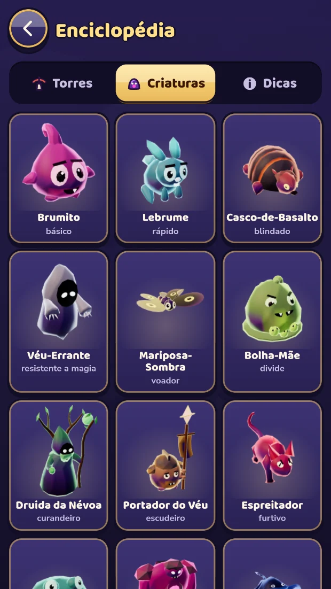
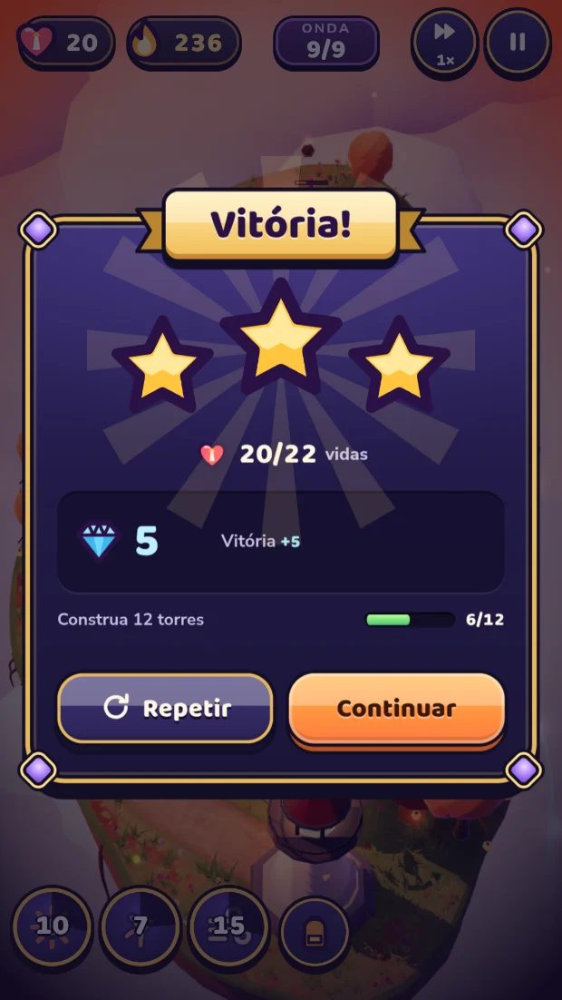

Desafios Heroicos
Fez 3 estrelas? A mesma ilha volta com uma regra extra: sem Bombarda, uma vida só, sem poderes…

A Bruma despertou. Uma névoa viva e roxa sobe do mar de nuvens e avança sobre as ilhas flutuantes do céu. Erga torres mágicas, lance poderes e não deixe a escuridão apagar o Farol.
Cada fase é uma ilha viva: moinhos girando, cachoeiras caindo no vazio, lanternas acesas e a Bruma rolando pelo caminho antes de cada onda.
No topo, cada torre escolhe um caminho que muda a forma e o jeito de lutar. Escolha uma torre e veja ela crescer:

Rápidas, blindadas, voadoras, curandeiras, furtivas, que se dividem e que saltam. Nada de violência: elas se desfazem em névoa e faíscas.

Quando a onda aperta, o Guardião do Farol entra em ação. Os poderes recarregam com o tempo e ficam mais fortes na árvore de melhorias.
Fez 3 estrelas? A mesma ilha volta com uma regra extra: sem Bombarda, uma vida só, sem poderes…
Ondas sem fim, um chefe a cada 10 ondas e recordes para bater em cada ilha.
Gaste as estrelas conquistadas em melhorias permanentes. Redistribua quando quiser.
Um baú diário e missões para ganhar gemas jogando.
Pôr do sol dourado, crepúsculo de outono, aurora na neve, poeira de cobre e noite de lua cheia.







Em breve no seu celular. Joga offline e o progresso fica no seu aparelho.